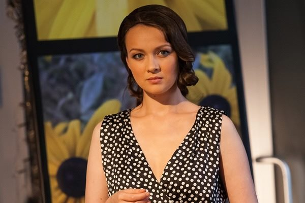

Ольга Олексий Ивановна
Свои семейные дела актриса хранит в тайне и не очень любит о них рассказывать. Из-за этой
скрытности вокруг ее имени ходит множество разнообразных слухов. Известно, что Ольга - красивая
женщина. Выразительные темные глаза, идеальные формы, стройные
ножки - все это вызывает восхищение у зрителей.
Кроме того, на свои сорок лет актриса не выглядит, она сохраняет свежесть лица и стройность
фигуры.
Ольге приписывают любовные истории с партнерами по кинофильмам и коллегами по театру.
Например, говорили о романе Ольги Олексий и Никиты Панфилова, с которым женщина снималась в
телесериале “Пес”. Ее также подозревали в связи с Гошей Куценко, особенно после выхода в прокат
фильма “Тринадцать месяцев”.
Оба актера играли возлюбленных Олексий, поэтому и возникли подобные домыслы. Актриса эти сплетни
никак не комментирует, предпочитая хранить молчание.

Между тем, в интервью она не раз упоминала, что состоит в законном браке. Муж Ольги Олексий - ее
поддержка и опора, пара много времени проводит вместе и имеет немало общих интересов.
Однако совместных фотографий Ольги с мужем в сети пока нет. Видимо, супруги тщательно скрываются
от внимания журналистов и ни разу не попали под объективы фотокамер.
Личные фото актриса выкладывает на своей странице в одной из социальных сетей. На данный момент
детей у Ольги Олексий и ее мужа нет. Все свое время актриса посвящает работе,
отдавая много сил театру и кино.
Она часто проводит отпуск вместе с родителями и друзьями, предпочитая отдыхать на морских
курортах. Известно, что у актрисы есть сестра, с которой женщина также поддерживает теплые родственные
отношения.